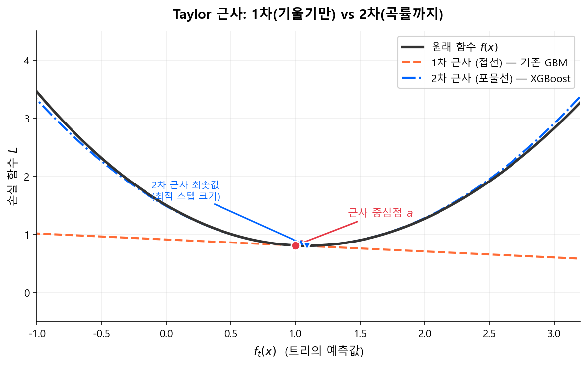

XGBoost와 LightGBM¶
6.1 왜 XGBoost/LightGBM인가¶
Gradient Boosting(GBM)의 원리는 2001년에 확립되었지만, 실무에서 폭발적으로 쓰이게 된 것은 구현의 혁신 덕분이다.
| 기존 GBM (sklearn) | XGBoost (2014) | LightGBM (2017) | |
|---|---|---|---|
| 개발 | Friedman 원논문 기반 | Tianqi Chen (U. Washington) | Microsoft Research |
| 속도 | 느림 | 빠름 (Histogram 모드 추가) | 빠름 (GOSS + EFB) |
| 정규화 | 없음 | L1/L2 정규화 내장 | L1/L2 정규화 내장 |
| 결측치 | 사전 처리 필요 | 자동 처리 | 자동 처리 |
| 대규모 데이터 | 한계 | GPU 지원 + 분산 학습 | GPU 지원 + GOSS 샘플링 |
| 튜닝 난이도 | 단순 | 직관적 (max_depth 1차원 제어) |
num_leaves × max_depth 2차원 제어 |
| 안정성 | 높음 (보수적) | 높음 (Level-wise 기본) | Leaf-wise 특성상 튜닝 주의 |
| 생태계 | 기본 | 가장 넓음 (산업 표준급) | 넓음 (빠르게 성장) |
2018년이나 지금(2026년)이나
신용평가 ML 모형의 실무 표준은 여전히 XGBoost 또는 LightGBM이다. 매년 새로운 딥러닝 아키텍처가 제안되지만, tabular 데이터에서 이 둘을 안정적으로 이기는 방법론은 아직 등장하지 않았다 (Grinsztajn et al., NeurIPS 2022).
6.2 XGBoost의 핵심 혁신¶
정규화된 목적함수¶
기존 GBM은 손실 함수만 최소화했다. XGBoost는 트리의 복잡도에 페널티를 부과하는 정규화 항을 추가했다.
- \(T\): Leaf 노드 수 — \(\gamma\)가 크면 Leaf가 적은(단순한) 트리를 선호
- \(w_j\): Leaf \(j\)의 예측값 — \(\lambda\)가 크면 극단적 예측을 억제
- 추가로 L1 정규화 \(\alpha |w_j|\)도 지원
정규화의 효과
기존 GBM에서는 과적합을 막으려면 max_depth나 learning_rate로만 제어했다. XGBoost는 목적함수 자체에 페널티를 내장하여, 트리 구조와 예측값 모두에 대해 수학적으로 과적합을 제어한다.
여기서 \(\frac{1}{2}\lambda \sum w_j^2\)는 정규화 이론에서 다룬 Ridge(L2) 페널티와 동일한 원리이고, \(\alpha \sum |w_j|\)는 Lasso(L1) 페널티다. 선형 모형에서 계수를 수축시키던 아이디어를, 트리의 Leaf 예측값에 적용한 것이다.
2차 Taylor 근사¶
Taylor 근사란?
복잡한 함수 \(f(x)\)를 어떤 점 \(a\) 근처에서 다항식으로 근사하는 기법이다. 미적분학의 가장 강력한 도구 중 하나로, 함수의 도함수 정보를 이용해 함수 모양을 흉내 낸다.
- 1차 근사(선형): 접선으로 근사 — 기존 GBM이 사용하는 방식
- 2차 근사(이차): 포물선으로 근사 — XGBoost가 사용하는 방식
1차 근사는 기울기(gradient)만 보고 "어느 방향으로 갈지"를 결정한다. 2차 근사는 곡률(hessian)까지 보고 "얼마나 갈지"까지 정밀하게 결정한다. Newton's method가 gradient descent보다 빠르게 수렴하는 이유와 동일한 원리다.
{kind=link}

기존 GBM은 1차 미분(gradient)만 사용했다. XGBoost는 2차 미분(hessian)까지 활용하여 최적 분할과 Leaf 가중치를 더 정밀하게 계산한다.
손실 함수의 2차 근사:
- \(g_i = \frac{\partial L}{\partial \hat{y}^{(t-1)}}\): 1차 미분 (gradient)
- \(h_i = \frac{\partial^2 L}{\partial (\hat{y}^{(t-1)})^2}\): 2차 미분 (hessian)
최적 Leaf 가중치:
최적 분할의 Gain:
- Gain이 음수면 분할하지 않음 → \(\gamma\)가 자연스러운 Pre-Pruning 역할
결측치 자동 처리¶
XGBoost는 결측치가 있는 샘플을 왼쪽과 오른쪽 모두에 보내보고, Gain이 더 높은 방향을 학습한다. 별도의 결측치 대체(imputation) 없이 원본 그대로 입력하면 된다.
실무 팁
결측치를 -999 같은 임의 값으로 채우는 것보다, XGBoost/LightGBM에 그대로 넘기는 것이 대부분 더 좋은 성능을 낸다. 트리가 결측 자체를 하나의 정보로 활용할 수 있기 때문이다.
현실은 녹록지 않다 -- Special Value 처리
이론적으로는 "NaN으로 넘기면 된다"이지만, 금융 실무의 전문(API) 데이터에서는 그게 쉽지 않다.
CB사 ↔ 금융기관 간 전문에서 결측치는 보통 9999999, 99999999 같은 Special Value로 채워져 온다. 전문 필드가 고정 길이(Fixed-length)이고, NULL 표현이 없는 레거시 시스템이 많기 때문이다.
문제는 이 Special Value가 변수마다 다를 수 있다는 점이다:
- 금액 필드:
9999999999(10자리) - 건수 필드:
999(3자리) - 비율 필드:
99.99 - 날짜 필드:
99999999
따라서 모형 학습 전에 후처리(Preprocessing) 단계에서 각 변수별 Special Value를 식별하고 NaN으로 변환하는 작업이 필수다. 이 매핑 테이블을 관리하는 것 자체가 하나의 업무가 된다.
시스템 최적화 — 이름값을 하는 eXtreme¶
XGBoost의 "X"는 eXtreme이다. 그런데 이 "Extreme"은 알고리즘이 아니라 엔지니어링을 가리킨다. Chen & Guestrin (2016) 논문 제목이 "XGBoost: A Scalable Tree Boosting System"인 이유다. 정규화와 2차 근사가 이론적 기여라면, 아래의 시스템 최적화가 XGBoost를 실무 표준으로 만든 진짜 이유다.
Column Block — 사전 정렬 구조¶
트리의 각 노드에서 최적 split을 찾으려면, 변수를 정렬한 뒤 왼쪽에서 오른쪽으로 훑으면서 gain을 계산해야 한다.
소득을 기준으로 split 탐색:
정렬 후: [150, 200, 350, 400, 500]
타겟: [ 1, 1, 0, 0, 0]
t=150 → 왼쪽{1} 오른쪽{1,0,0,0} → gain?
t=200 → 왼쪽{1,1} 오른쪽{0,0,0} → gain? ← best
t=350 → 왼쪽{1,1,0} 오른쪽{0,0} → gain?
기존 GBM(sklearn)은 매 노드마다 이 정렬을 반복했다. 트리 500개 × 노드 31개면 약 15,000번의 정렬이 발생한다.
XGBoost는 학습 시작 전에 딱 한 번 각 변수를 정렬하고, 그 인덱스를 열(Column) 단위 블록으로 저장해둔다.
Column Block (열 기준, 사전 정렬):
소득 블록: [(150,샘플3), (200,샘플1), (350,샘플0), (400,샘플4), (500,샘플2)]
나이 블록: [(25,샘플3), (28,샘플1), (35,샘플0), (38,샘플4), (42,샘플2)]
부채 블록: [(50,샘플1), (80,샘플3), (100,샘플0), (150,샘플4), (200,샘플2)]
이후 어떤 노드에서든 정렬 없이 블록을 순차 스캔하면 된다. 노드당 \(O(N \log N)\) → \(O(N)\)으로 감소한다. 여기에 두 가지 부수 효과가 따른다:
- Lock-free 병렬화: 각 변수가 독립된 메모리 블록이므로, split 탐색을 변수별로 병렬 수행할 수 있다
- Cache-Aware Access: 정렬 인덱스로 gradient/hessian을 읽으면 메모리 접근이 비순차적(random access)이 되어 CPU 캐시 미스가 급증한다. XGBoost는 통계량을 내부 버퍼에 prefetch하여 순차 접근으로 변환한다. 이 최적화 하나로 약 2배 속도 향상이 보고되었다
Boosting의 병렬화는 '트리 사이'가 아니라 '트리 안'
흔한 오해가 "트리를 병렬로 만든다"는 것이다. Boosting은 이전 트리의 잔차를 다음 트리가 학습하는 순차적 구조이므로, 트리 간 병렬화는 불가능하다. XGBoost가 병렬화한 것은 한 노드 안에서 변수별 split 탐색이다. Column Block 구조 덕분에 변수 간 메모리 공유가 없어 lock 없이 병렬화할 수 있다.
Approximate Split Finding — Weighted Quantile Sketch¶
Column Block으로 정렬 비용은 해결했지만, 여전히 모든 데이터 포인트가 후보 split이다. 데이터가 1억 건이면 후보도 1억 개다. XGBoost는 quantile 기반으로 후보를 줄인다.
Exact: 후보 split = N개 (전체 데이터)
Approximate: 후보 split ≈ 1/ε개 (보통 수백 개)
핵심은 단순 quantile이 아니라 hessian 가중 quantile이라는 점이다. 식 (3)의 목적함수를 정리하면 각 샘플의 가중 제곱 손실 형태가 되고, 이때 각 샘플의 "중요도"가 \(h_i\)(hessian)이다.
따라서 hessian이 큰 구간에는 후보를 촘촘하게, 작은 구간에는 듬성듬성 배치해야 gain 근사 오차가 최소화된다.
| 구간 | hessian 크기 | 후보 밀도 |
|---|---|---|
| 불확실한 영역 (예측 확률 ≈ 0.5) | 높음 | 촘촘 |
| 확실한 영역 (예측 확률 ≈ 0 또는 1) | 낮음 | 듬성 |
Weighted Quantile Sketch
데이터가 메모리에 안 들어갈 수 있으므로, 전체를 한 번에 정렬해서 quantile을 구하는 것은 불가능할 수 있다. XGBoost는 데이터를 블록 단위로 읽으며 각 블록의 요약(summary)을 만들고, 이를 병합(merge)하여 전체의 근사 quantile을 구한다. Greenwald-Khanna (2001) sketch의 hessian 가중 확장 버전이다.
tree_method의 변천사
| 시기 | 기본 tree_method | 동작 |
|---|---|---|
| v1.x | auto |
데이터 특성에 따라 exact 또는 approx 자동 선택 |
| v2.0+ (2023.08~) | hist |
Histogram 기반 고정 |
hist는 Approximate의 극단적 형태로, 변수 값을 아예 256개 bin으로 양자화한다. LightGBM이 이 방식으로 압도적 속도를 보여준 뒤, XGBoost도 이를 기본값으로 채택했다. 현재는 XGBoost든 LightGBM이든 Histogram 방식이 사실상 표준이다.
6.3 LightGBM의 핵심 혁신¶
LightGBM은 XGBoost의 원리를 공유하면서, 학습 속도를 극적으로 개선한 세 가지 기법을 도입했다.
Histogram-based Splitting¶
기존 Exact Greedy 방식은 모든 변수값을 정렬한 뒤 하나씩 스캔하여 최적 분할점을 찾는다. LightGBM은 연속값을 이산 Bin(히스토그램)으로 변환하여, 탐색 복잡도를 \(O(N)\)에서 \(O(\text{bins})\)로 대폭 줄인다. LightGBM이 2017년 출시부터 이 방식을 기본으로 채택하여 압도적 속도를 보여준 뒤, XGBoost도 v2.0(2023.08)부터 tree_method='hist'를 기본값으로 변경했다. 현재는 양쪽 모두 Histogram 방식이 표준이다.
{kind=link}
히스토그램의 부수 효과
Bin 수가 제한되므로(기본 255) 메모리 사용량도 크게 줄어든다. 또한 부모 노드의 히스토그램에서 한쪽 자식을 빼면 다른 자식의 히스토그램을 바로 구할 수 있어(Histogram Subtraction), 계산량이 추가로 절반 감소한다.
GOSS (Gradient-based One-Side Sampling)¶
모든 샘플이 동등하게 중요한 것은 아니다. Gradient가 큰 샘플(=현재 모형이 크게 틀리고 있는 샘플)이 정보 이득에 더 큰 기여를 한다.
{kind=link}
- Gradient가 큰 상위 \(a\)% 샘플은 전부 유지
- 나머지 \((1-a)\)%에서 \(b\)%만 랜덤 샘플링
- 샘플링된 데이터의 gradient에 \(\frac{1-a}{b}\) 가중치를 곱해 분포 보정
결과: 데이터 양은 크게 줄이면서, Information Gain 추정의 정확도는 유지.
EFB (Exclusive Feature Bundling)¶
고차원 데이터에서 많은 변수가 상호 배타적(동시에 0이 아닌 값을 가지지 않음)인 경우가 많다. 예: One-Hot 인코딩된 범주형 변수들.
EFB는 이런 배타적 변수들을 하나의 변수로 묶어(bundle) 변수 차원을 축소한다. 이를 통해 분할 후보 탐색 시간이 크게 줄어든다.
{kind=link}
Leaf-wise vs Level-wise 성장¶
{kind=link}
| XGBoost (Level-wise) | LightGBM (Leaf-wise) | |
|---|---|---|
| 방식 | 같은 깊이의 모든 노드를 분할 | Gain이 최대인 Leaf만 분할 |
| 장점 | 균형 잡힌 트리, 과적합 제어 쉬움 | 같은 Leaf 수 대비 오차 감소가 큼 |
| 단점 | 불필요한 분할도 수행 | 불균형 트리 → 과적합 가능성 |
Leaf-wise의 과적합 위험
LightGBM의 Leaf-wise 성장은 데이터가 적을 때 과적합에 취약하다. num_leaves를 max_depth 환산값(\(2^{\text{depth}}\))보다 작게 설정하여 제어한다. 예: max_depth=6이면 num_leaves는 \(2^6 = 64\)보다 작은 31~50 정도.
6.4 XGBoost vs LightGBM 비교¶
| 항목 | XGBoost | LightGBM |
|---|---|---|
| 트리 성장 | Level-wise (안정적) | Leaf-wise (공격적) |
| 속도 | 빠름 (tree_method='hist'로 격차 축소) |
빠름 (대규모 데이터에서 우위) |
| 메모리 | 보통 | 적음 (히스토그램 기반) |
| 튜닝 난이도 | max_depth 하나로 복잡도 제어 (1차원) |
num_leaves × max_depth 두 축을 동시 제어 (2차원) |
| 범주형 변수 | 사전 인코딩 필요 | 네이티브 지원 |
| 결측치 | 자동 처리 | 자동 처리 |
| GPU | 지원 | 지원 |
| 과적합 제어 | 안정적 (Level-wise + 강한 정규화) | Leaf-wise 특성상 num_leaves 제어 필요 |
| 산업 채택 | 금융·의료 등 규제 산업에서 주류 | Kaggle·대규모 데이터 중심 |
실무 선택 기준
- 데이터 < 50만 행: 속도 차이 거의 없음. XGBoost의
max_depth단일 축 제어가 튜닝 진입장벽을 낮춤 - 데이터 > 100만 행: LightGBM이 GOSS/EFB 덕분에 학습 속도 우위
- 범주형 변수가 많을 때: LightGBM의 네이티브 범주형 지원이 전처리 부담을 줄임
- Kaggle/대회: LightGBM이 주류, 그러나 XGBoost와 앙상블하면 더 좋은 경우도 많음
- 신용평가 실무: XGBoost를 표준으로 쓰는 조직이 여전히 많다. Level-wise의 안정성, 넓은 생태계,
max_depth중심의 직관적 튜닝이 규제 산업에서 선호되는 이유
속도 격차, 아직도 크다?
LightGBM 출시 당시(2017) XGBoost는 Exact Greedy가 기본이라 5~10배 차이가 났다. 그러나 XGBoost 2.0(2023.08)부터 tree_method='hist'가 기본값이 되면서 격차가 크게 줄었다.
| 데이터 규모 | 현재 속도 격차 | 실무 영향 |
|---|---|---|
| < 50만 행 | 거의 동일 | 없음 |
| 50만 ~ 500만 행 | LightGBM 1.3~2× | 하이퍼파라미터 탐색(수백 회 반복) 시 체감 |
| > 500만 행 | LightGBM 1.5~2× | GOSS + EFB의 구조적 이점 |
신용평가 데이터(보통 20만~200만 행)에서는 단일 학습 속도 차이가 사실상 의미 없다. 대규모 탐색을 돌릴 때만 차이가 누적된다.
다음 섹션
XGBoost와 LightGBM의 알고리즘 혁신을 이해했으니, 다음에서는 이들의 하이퍼파라미터 튜닝 전략을 학습한다.